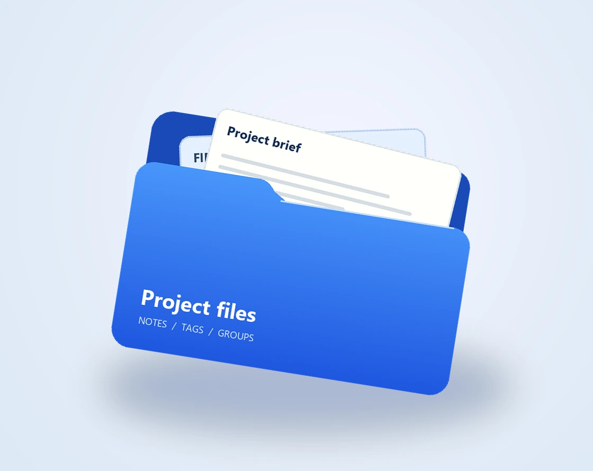

Notes that link to files
Record what changed or what needs a second look. Link a note to several files, open them together, and mark the note resolved when the work is done.
Windows 11 x64 · Open source
Hudes keeps project notes, tags, and reminders beside your files. Pull together related work across folders, then archive it without moving the originals.

Give each file or folder one group and as many tags as you need. A tag can bring a brief, a budget, and a set of drawings into the same view.
Try a tag in the sample project.
Record what changed or what needs a second look. Link a note to several files, open them together, and mark the note resolved when the work is done.
View archived files by group while their disk locations stay the same. Export a physical copy of the archive with notes and tags in CSV or Excel format.
Right-click a folder to open a terminal there. Switch between installed shells in tabs and keep frequently used apps or commands in the shortcut bar.
Version 1.2.9s · Windows 11 x64 · GPLv3